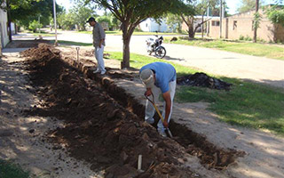
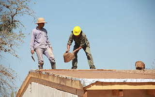
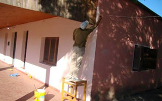

Agua para Rivadavia banda norte (Salta) Salta, Salta Barrio 1 de Mayo 12 establecimientos 250 alumnos Estado del proyecto 12% Ver proyecto
Agua para el Salado Norte (Santiago del Estero) Santiago del Estero Barrio Almirante Brown 7 establecimientos 90 alumnos Estado del proyecto 17% Ver proyecto
Agua para escuelas rurales (Chaco) Chaco, Resistencia Barrio Santa Mónica 12 establecimientos 250 alumnos Estado del proyecto 23% Ver proyecto
 Agua para escuelas de Cerrillos (Salta) Salta, Salta Barrio Cerrillos 3 establecimientos 90 alumnos Estado del proyecto 25% Ver proyecto
 Agua para La Banda (Santiago del Estero) Santiago del Estero Barrio La Banda 7 establecimientos 90 alumnos Estado del proyecto 45% Ver proyecto
 Agua para escuelas de Charata (Chaco) Chaco, Resistencia Barrio Charata 5 establecimientos 170 alumnos Estado del proyecto 65% Ver proyecto